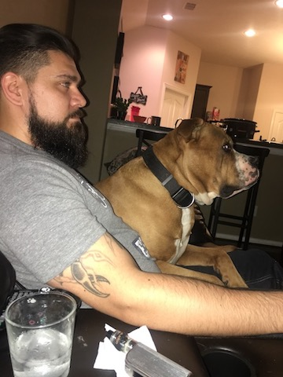

My name is Luis Renteria II. I was born in 1984 in Houston. My formative years happened to conincide with the information age and the advent of the internet. Experiencing this I recognized at an early age that technolgy would be my ticket to a better life.
I took some networking classes in high school, and afer the Navy I studied Information Systems Management in college. In the Navy I was an Information Systems Technician and this helped me land my first job out of the servie, which lead to my transferring into SharePoint Administration (SharePoint is a Microsoft application).
Throughout college and since graduating in 2014 I have held a series of progressive SharePoint roles that can be coorelated to my consistently deepening knowledge of the SharePoint platform and all underpinning technologies. This journey has culminated now to my joining the Digital Crafts bootcamp.